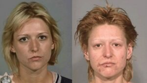

Лечение зависимости от амфетамина в Киеве
Лечение зависимости от амфетамина в Киеве
Амфетамин является мощным психостимулятором, который при нецелевом употреблении оказывает значительное негативное влияние на центральную нервную систему человека. На начальном этапе употребление амфетамина вызывает чувство эйфории, повышает уровень энергии и улучшает концентрацию. Однако, несмотря на кратковременные положительные эффекты, этот наркотик приводит к серьёзным последствиям для здоровья и психики.
Прием амфетамина может происходить различными способами: его можно глотать, нюхать, курить или вводить в вену. В зависимости от способа употребления, эффект может проявляться быстрее или медленнее. Однако все эти способы обусловленны высокими рисками и могут вызвать сильную зависимость уже после нескольких раз употребления.
Кратковременные эффекты включают: подъём настроения, повышенную физическую активность и снижение аппетита. Но со временем у человека могут развиться более серьёзные проблемы: тревожность, паранойя, дипрессия, бессонница и даже психоз. Долгосрочное употребление амфетамина приводит к разрушению работы головного мозга, нервной системы, проблемам с сердечно-сосудистой системой и другим серьёзным заболеваниям, ну и должны понимать, что употребление психоактивных веществ, рано или поздно приводят к биопсихосоциальному ущербу.
Решение проблемы зависимости от амфетамина детоксикация и реабилитация
Реабилитационный Центр "Тонус Плюс" предлагает комплексный подход в лечении этой зависимости. Лечение зависимости от амфетамина основана на эффективной программе , состоящей из трех этапов: детоксикация и диагностика, реабилитация и ресоциализация.
Этап 1: Детоксикация и диагностика (28 дней)
Первый этап программы – это детоксикация организма и диагностика состояния пациента.
Процесс детоксикации включает в себя безопасное выведение амфетамина из организма под наблюдением врачей. Это позволяет минимизировать симптомы отмены и обеспечить комфортное состояние пациента. После детоксикации, в течение 28 дней специалисты реабилитационного центра «Тонус плюс» работают над восстановлением физического и психического здоровья резидента, применяя медикаментозные (только по назначению врача) и психологические методы.
На этом этапе специалисты реабилитационного центра «Тонус плюс» проводят оценивание состояния организма, чтобы понять степень зависимости и выявить возможные сопутствующие физические заболевания, а возможно и растройства психики, которые возникли в ходе употребления. Используются современные методы диагностики и индивидуальный подход к каждому пациенту.
Так же ведется индивидуальная работа специалистов с резидентом, где ему помогают проанализировать все последствия употребления, оценить на какие сферы жизни повлияла их зависимость, и какие есть способы решений. На данном этапе ставятся цели и задачи, которые помагают улучшить ситуацию в этих сферах, и их стабилизировать.
Этап 2: Реабилитация
После успешной детоксикации начинается второй этап – реабилитация, которая расчитана на 3 месяца. Она направлена на восстановление физического, психического, социального, и духовно-нравственного здоровья, формирование новых привычек и навыков трезвой жизни, наработки недостающего опыта без вещества, так как человек утратил смысл жизни без наркотика. В реабилитационном центре «Тонус плюс» резиденты проходят разнообразные терапевтические занятия: индивидуальные и групповые сессии с психологами, арт-терапия, занятия по когнитивно-поведенческой терапии, работают по индивидуальной программе, где узнают о зависимости, и получают инструменты для применения и поддержания трезвого образа жизни.
Мы также уделяем большое внимание физическому состоянию наших резидентов. Спорт и активные занятия помогают не только улучшить здоровье, но и развивают командный дух и взаимопомощь среди участников программы. На этом этапе мы обучаем резидентов навыкам управления стрессом и эмоциями, что является важным шагом на пути к выздоровлению от амфетаминовой зависимости.
Этап 3: Ресоциализация
Этот этап направлен на успешную интеграцию человека в общество после завершения реабилитации. Мы помогаем восстановить социальные связи, найти работу и обрести уверенность в себе. Резиденты участвуют в различных мероприятиях, направленных на развитие коммуникативных навыков и уверенности в себе.
Важной частью этого этапа является поддержка со стороны специалистов нашего реабилитационного центра. Мы продолжаем сопровождать ребят даже после выхода из программы, предоставляя необходимую помощь и консультации.
Условия проживания в Реабилитационном Центре "Тонус Плюс"
Наш реабилитационный центр расположен в живописном месте рядом с лесом и природой, что создаёт идеальные условия для восстановления. Чистый воздух и спокойная обстановка способствуют быстрому выздоровлению и восстановлению душевного равновесия.
Мы обеспечиваем наших резидентов трёхразовым сбалансированным питанием. Уютные комнаты, домашняя обстановка, лекционный просторный зал, в каждой комнате телевизоры с интернетом. Кроме того, у нас есть спортзал, где могут заниматься физической нагрузкой, а так же есть теннисный стол для активного отдыха, большой двор, где модно почитать книгу на свежем воздухе, полюбоватся цветущими розами и насаждениями.
Прогулки на природе являются важной частью нашей программы. Они помогают снять стресс и напряжение, а также способствуют восстановлению душевного спокойствия.
В Реабилитационном Центре "Тонус Плюс" мы понимаем важность комплексного подхода к лечению зависимости от амфетамина. Наши специалисты готовы поддержать вас на каждом этапе пути к выздоровлению.
Как проходит лечение амфетаминовой зависимости:
МОТИВАЦИЯ
- Рекомендация психолога
- Выезд специалиста
- Гарантия результата
ДЕТОКСИКАЦИЯ
- Выезд на дом (в стационаре)
- Очищение организма
- Диагностика психиатра
РЕАБИЛИТАЦИЯ
- Социальная программа
- Стандартная программа
- Индивидуальная программа
СОЦИАЛЬНАЯ АДАПТАЦИЯ
- Возможность трудоустройства
- Обучение профессиям
- Амбулаторное сопровождение
ПОДДЕРЖКА РОДСТВЕННИКОВ
- Группа взаимопомощи
- Вебинары (онлайн)
- Индивидуальные консультации
НЕ ХОЧЕТ
ЛЕЧИТЬСЯ
?
Мотивация на лечение от амфетамина
Квалифицированным специалистам всегда проще найти подход к зависимому человеку. Наши сотрудники оказывают помощь в мотивации и интервенции КРУГЛОСУТОЧНО. Осуществляем доставку пациента прямо в центр социальной адаптации.
Лечение наркомании Киев отзывы из Google


Как долго лечат от наркомании?
 Наркологический центр «Тонус Плюс» располагает такими программами: перезагрузка, срыв 90 дней, экспресс программа. Полный курс лечения наркологической зависимости составляется для каждого пациента, учитывая тяжесть ситуации, длительность курса разная, но не менее 4-5 недель. Даже после полноценного лечения, человеку будет трудно сохранять равнодушие к наркотикам, если вокруг него будут зависимые «друзья», старые связи и маргинальное окружение. В данном случае показана пролонгированная изоляция пациента, как основа терапии и стабильного результата.
Наркологический центр «Тонус Плюс» располагает такими программами: перезагрузка, срыв 90 дней, экспресс программа. Полный курс лечения наркологической зависимости составляется для каждого пациента, учитывая тяжесть ситуации, длительность курса разная, но не менее 4-5 недель. Даже после полноценного лечения, человеку будет трудно сохранять равнодушие к наркотикам, если вокруг него будут зависимые «друзья», старые связи и маргинальное окружение. В данном случае показана пролонгированная изоляция пациента, как основа терапии и стабильного результата.
Как и где будут жить пациенты клиники?
Для каждого человека длительное расставание с близкими и домом несет негативные переживания. Нивелировать эти моменты можно посредством комфортной и уютной во всех смыслах обстановки. Многопрофильный центр реабилитации «Тонус Плюс» предлагает удобные номера, где человек будет чувствовать себя комфортно под присмотром врачей. Внимательный персонал с понимаем относится к проблемам пациентов.


Амфетамин это наркотик пролонгированного действия. Если амфетамин вводится внутривенно, то уже через пару минут он попадает в головной мозг, а его действие, как наркотика, продолжается около 12 часов. Затем, наркотическое вещество усваивается печенью и желудком, где распадается на эфедрин и другие активные компоненты, и попадает кровь. Амфетамин выводится почками, что делает возможным проверить употребление этого вещества экспресс тестом на наркотики.



К первым признаками употребления амфетамина относятся:
- чрезмерная гиперактивность;
- неестественно расширенные зрачки;
- непреодолимое желание завязывать и поддерживать разговоры на любую тему, ускоренная речь;
- бессонница;
- состояние жара, сильное потоотделение;
- быстрая потеря веса.
Амфетамин и его разрушительное влияние на системы организма
Со стороны психики
При многократном приеме амфетамина у зависимого развивается серьёзное нарушение со стороны психики-стимуляторный психоз.
К основным симптомам амфетаминового психоза относятся:
- слуховые и зрительные галлюцинации;
- бредовые расстройства, которые сопровождаются страхом и навязчивой идеей, что человека преследуют. Или человеку кажется, что все видят в нем недостатки, которые ранее были известны ему одному;
- депрессия, смешанные чувства, такие как тоска с тревогой, при этом присутствует энтузиазм к странным поведенческим механизмам, способным разрешить им же придуманную проблему;
- галлюцинаторный синдром, когда зависимому человеку может казаться, что по нему ползают насекомые;
- двигательные нарушения,при которых человек может совершать хаотичные действия, порой опасные для своей жизни и окружающих;
- излишнее психомоторное возбуждение, которое характеризуется очень быстрой речью, но совсем не к месту. Мозг человека, под воздействием наркотиков, настолько быстро получает сигналы, что не успевая обрабатывать один, тут же переключается на другой сигнал, при этом, в речи это проявляется быстрым переключением с темы на тему.
К другим негативным последствиям для организма человека, в следствии приёма амфетамина, относятся:
- инсульт и инфаркт;
- почечная недостаточность;
- разрушение костной ткани;
- полная или частичная слепота;
- анорексия;
- гипертермия, иногда с летальным исходом;
- расслоение аорты;
- тахикардиях и гипертония.
Употребление амфетамина несёт грубые нарушения в работе психики и всего организма человека. Специалисты нашего центра готовы оказать Вам или Вашему близкому своевременную квалифицированную помощь в преодолении амфетаминовой зависимости.
Не упускайте шанс вернуть себе и своей семье нормальную и счастливую жизнь!
Наши специалисты

Андрей Кочетков
Специализация: наркология, психиатрия, психотерапия.
Год начала практики: 2008
Квалификационная категория: первая

Елена Алферова
Специализация: психотерапия.
Год начала практики: 2005

Игорь Алферов
Специализация: практичная психология.
Год начала практики: 2013
Лицензии и сертификаты
Специалисты реабилитационного центра для зависимых Тонус Плюс, имеют право врачебной деятельности в сферах: лечение наркомании, алкоголизма и игромании. Все врачи имеют высшее образование и большой опыт в сферах лечения, реабилитации и предотвращении срывов зависимых. Процент выздоровления пациентов говорит сам за себя.

{kind=link}
{kind=link}
{kind=link}
{kind=link}
{kind=link}
{kind=link}